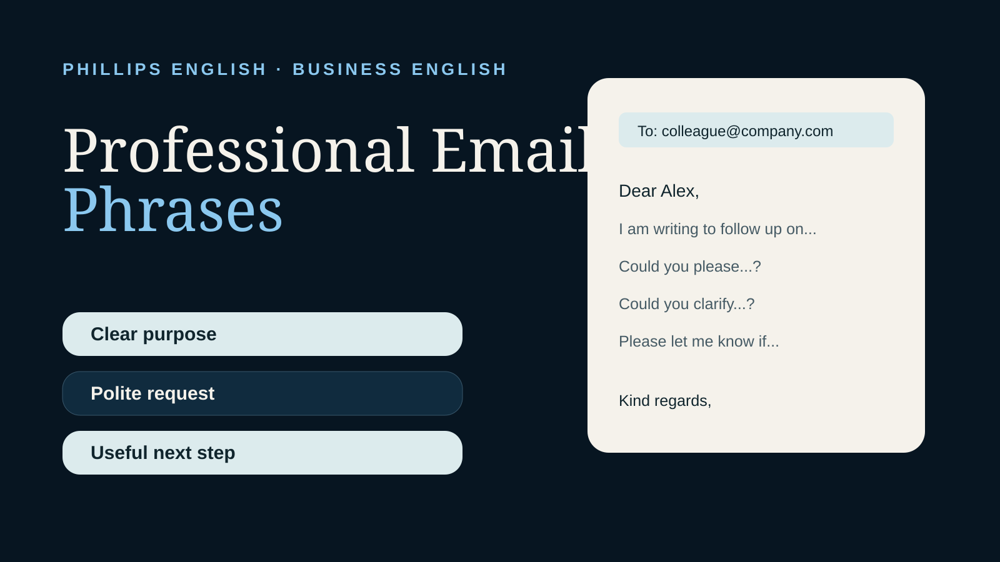

Good professional email English is clear, polite and easy to act on. Choose natural phrases that show the purpose of the message quickly.
Opening a professional email
I hope you are well.
I am writing regarding...
I am writing to follow up on...
Thank you for your email.
For most workplace emails, one short opening is enough. You do not need a long introduction before getting to the point.
Making a request politely
Could you please send me the updated figures?
Would you be able to confirm the deadline?
I would be grateful if you could review the document.
Could you let me know whether this works for you?
Make the next action obvious
Compare “I am writing to kindly request you to please inform me about the document at your earliest convenience” with “Could you send me the revised document by Thursday afternoon?” The second is shorter, but also more helpful: the reader knows exactly what you need and when.
Polite English doesn't have to hide the request behind ten extra words. If you need to soften the tone, add a brief reason: “It would help us finalise the report on Friday.”
Following up
I am following up on my previous email.
I just wanted to check whether you had a chance to review this.
Could you please provide an update when convenient?
A follow up should be polite but clear. Avoid making the reader guess what you need from them.
Clarifying information
Just to clarify, do you mean...?
Could you clarify what you mean by...?
As I understand it, the next step is...
Please correct me if I have misunderstood.
Disagreeing or raising a concern professionally
I understand your point. However, I have a concern about...
From my perspective, we may need to reconsider...
One possible issue is...
Would it be worth looking at an alternative?
Closing the email
Please let me know if you have any questions.
I look forward to hearing from you.
Thank you in advance for your help.
Kind regards,
Best regards,
Common email mistakes
Kindly revert me soon.
Please get back to me when you can.
I want you to send it today.
Could you please send it today?
I am waiting your reply.
I look forward to your reply.
A complete example
Subject: Updated proposal
Hi Daniel,
I am writing to follow up on the proposal we discussed yesterday. Could you please send me the updated pricing section by Thursday afternoon?
Please let me know if you need anything from my side.
Kind regards,
Jason
Quick practice
Rewrite these to sound more professional.
1. Send me the report.
2. I do not understand.
3. Reply quickly.
Possible answers: Could you please send me the report? Could you clarify this point for me? I would appreciate a reply when convenient.
The takeaway
Professional English is not about making every sentence formal. It is about making your message easy to understand while keeping the tone appropriate. A few reliable phrases can make your emails sound much more confident and polished.
If you want corrections based on the English you actually use at work, you can try a free 25 minute lesson.